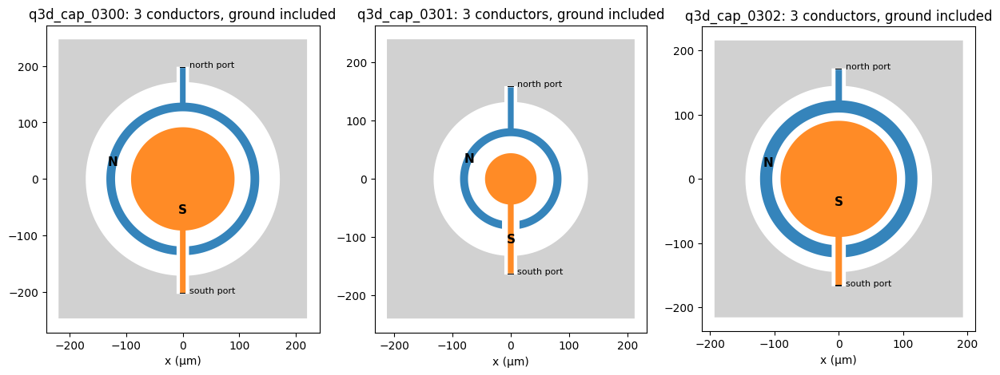
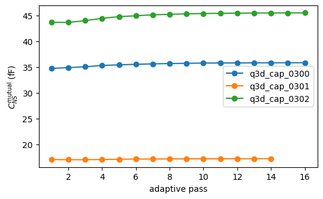

Tutorial 15: Contributing Capacitance Data and Models#
The planar capacitance models are only as good as the layouts they have seen, and every Q3D solve we run on our own designs is a layout they have not. In this tutorial, we will give our own Q3D simulations (and, if we have one, our own trained model) back to SQuADDS, so that the next designer starts from a better model. By the end of this tutorial, you will be able to: package and validate a contribution, catch broken labels with the validator, and see exactly what a pull request would add.
Note: this tutorial needs the optional ML extra, pip install "squadds[ml]". Nothing is uploaded in this tutorial: every contribution call runs with dry_run=True. It builds on Tutorial 3 (the contributor setup) and Tutorial 14 (training a model).
[1]:
%load_ext autoreload
%autoreload 2
%matplotlib inline
Why contribute?#
The models learned the map from a GDS layout to the full Maxwell capacitance matrix from about 45,000 Ansys Q3D simulations, each of which cost somebody minutes to an hour of solver time. A family of shapes that nobody has simulated yet is exactly where they are least reliable. If we give our simulations back:
the next retraining of the collective model sees our shapes, and gets better on them (and on everything that looks like them),
our simulations get a citable home on Hugging Face, with our name on them, and
nobody has to pay for the same solves again.
The catch is that a single broken label (a flipped sign, a wrong unit, two nets swapped) quietly poisons a training set. So every contribution goes through a validator first, and then through a maintainer’s review.
The story#
Let’s say we simulated three concentric capacitors in Q3D: a round island inside a ring, both inside a round pocket in the ground plane. The ring is fed by a short CPW stub from the north, and the island by one from the south, through a gap in the ring. For each design, Q3D gave us the GDS we solved, the options that generated it (JSON) and the capacitance export cap_matrix.csv.
For this tutorial, our three designs are real Q3D simulations from the SQuADDS planar capacitance dataset (family exp10, all three in its training split) that ship in data/tutorial15/. We’ll see below that the validator notices they are already in the dataset.
[2]:
import os
os.environ["QISKIT_METAL_HEADLESS"] = "1"
import warnings
warnings.filterwarnings("ignore")
[3]:
import json
import shutil
from pathlib import Path
import gdstk
import matplotlib.pyplot as plt
import numpy as np
import pandas as pd
import yaml
import squadds
Importing SQuADDS switches the inline figures of a notebook to PDF / SVG (a setting it inherits from scqubits), so let’s switch back to PNG.
[4]:
from matplotlib_inline.backend_inline import set_matplotlib_formats
set_matplotlib_formats("png")
We’ll write everything into one folder, and start from a clean one.
[5]:
work = Path("tutorial15_files")
shutil.rmtree(work, ignore_errors=True)
work.mkdir()
Here is what Q3D left us with: one folder per design.
[6]:
raw = sorted(Path("data/tutorial15").iterdir())
{f.name: sorted(p.name for p in f.iterdir()) for f in raw}
[6]:
{'q3d_cap_0300': ['cap_0300.gds', 'cap_0300.json', 'cap_matrix.csv'],
'q3d_cap_0301': ['cap_0301.gds', 'cap_0301.json', 'cap_matrix.csv'],
'q3d_cap_0302': ['cap_0302.gds', 'cap_0302.json', 'cap_matrix.csv']}
And here are the knobs we turned (µm), straight from the generator options:
[7]:
options = {f.name: json.loads(next(f.glob("*.json")).read_text())["cap_options"] for f in raw}
knobs = ["inner_radius_x", "outer_inner_radius_x", "outer_outer_radius_x", "ground_inner_radius_x",
"north_cpw_length", "south_cpw_length"]
pd.DataFrame({d: {k: float(o[k].replace("um", "")) for k in knobs} for d, o in options.items()}).T
[7]:
| inner_radius_x | outer_inner_radius_x | outer_outer_radius_x | ground_inner_radius_x | north_cpw_length | south_cpw_length | |
|---|---|---|---|---|---|---|
| q3d_cap_0300 | 91.47 | 119.70 | 135.10 | 171.57 | 25.0 | 30.0 |
| q3d_cap_0301 | 44.13 | 73.28 | 86.95 | 132.29 | 25.0 | 30.0 |
| q3d_cap_0302 | 90.45 | 103.30 | 122.31 | 145.05 | 25.0 | 20.0 |
Look at the metal (and the ports) first#
Before we hand anything to anybody, let’s look at what we simulated. A planar capacitance contribution uses the same layer map as the models: the ground plane on layer 1/0 and every signal conductor on layer 1/10. Each connected body on 1/10 is one conductor and its own net. Nets are never merged.
These GDS files also carry two tiny port stubs, on layers 2/0 (north) and 3/0 (south). Q3D used them to name the nets (N and S). The validator ignores any layer that is not in the layer map.
[8]:
from shapely.geometry import Polygon
PORTS = {(2, 0): "north port", (3, 0): "south port"}
def plot_gds(path, names, ax):
"""Ground in grey, every conductor in its own color (labelled with its net name), port stubs in black."""
cell = gdstk.read_gds(str(path), unit=1e-6).top_level()[0]
k = 0
for poly in cell.polygons:
xy, key = poly.points, (poly.layer, poly.datatype)
if key == (1, 0):
ax.fill(*xy.T, color="0.82", lw=0)
elif key == (1, 10):
ax.fill(*xy.T, color=plt.cm.tab10.colors[k], lw=0, alpha=0.9)
p = Polygon(xy).representative_point()
ax.annotate(names[k], (p.x, p.y), ha="center", va="center", fontsize=11, weight="bold")
k += 1
elif key in PORTS:
ax.fill(*xy.T, color="k", lw=0)
ax.annotate(PORTS[key], xy.mean(0), xytext=(6, 0), textcoords="offset points", fontsize=8)
ax.set_aspect("equal")
ax.set_xlabel("x (µm)")
return k
[9]:
fig, axes = plt.subplots(1, 3, figsize=(15, 5))
for ax, f in zip(axes, raw):
n = plot_gds(next(f.glob("*.gds")), ["N", "S"], ax)
ax.set_title(f"{f.name}: {n + 1} conductors, ground included")

Three conductors each, ground included: \(N = 3\) (the ring N, the island S and the ground G). So each Q3D export must be a full \(3 \times 3\) Maxwell matrix over G, N and S. The conductors on layer 1/10 come in the GDS file in the order N, S, which is the order we will declare (ground first, then the conductors in GDS file order).
Reading the Q3D export#
Q3D writes one row per adaptive pass, with one column per matrix entry, here in pF. read_cap_matrix from the QC module reads every pass and converts it to fF, the unit used everywhere in SQuADDS.
[10]:
from squadds.ml.capacitance import qc
[11]:
export = qc.read_cap_matrix(raw[0] / "cap_matrix.csv")
export["names"], export["units"], len(export["passes"])
[11]:
(['G', 'N', 'S'], ['pF'], 16)
The label is the last complete pass. For \(N\) conductors, the charges and voltages are related by \(Q_i = \sum_j C_{ij} V_j\): the diagonal is positive (self capacitance), the off-diagonal entries are negative (\(C_{ij} = -C^{\rm mutual}_{ij}\)), and the matrix is symmetric.
[12]:
last_pass, C = export["passes"][-1]
pd.DataFrame(C, index=export["names"], columns=export["names"]).round(3)
[12]:
| G | N | S | |
|---|---|---|---|
| G | 113.847 | -57.877 | -34.890 |
| N | -57.877 | 96.897 | -35.844 |
| S | -34.890 | -35.844 | 74.114 |
It is worth a glance at how the mutual capacitances settled over the passes:
[13]:
fig, ax = plt.subplots(figsize=(6, 3.5))
for f in raw:
m = qc.read_cap_matrix(f / "cap_matrix.csv")
i, j = m["names"].index("N"), m["names"].index("S")
ax.plot([p for p, _ in m["passes"]], [-M[i, j] for _, M in m["passes"]], "o-", label=f.name)
ax.set_xlabel("adaptive pass")
ax.set_ylabel("$C_{NS}^{\\rm mutual}$ (fF)")
ax.legend();

Filling the contribution template#
SQuADDS ships a template folder for planar capacitance contributions. Let’s copy it and look inside.
[14]:
template = Path(squadds.__file__).parent / "database" / "templates" / "planar_capacitance_contribution"
contrib = work / "my_contribution"
shutil.copytree(template, contrib)
sorted(p.name for p in contrib.iterdir())
[14]:
['README.md', 'designs.csv', 'manifest.yaml']
The README.md in the template explains every file. In short:
manifest.yaml who, licence, solver, stack, setup, layer map, units, generator, family
designs.csv one row per design
gds/<design>.gds the solved file, as solved (not re-saved)
sims/<design>/<sim_tag>/cap_matrix.csv the Q3D export as is (one row per adaptive pass)
The manifest#
The manifest says who we are, under which licence we share the data (the dataset accepts CC-BY-4.0 or CC0-1.0), how we solved it and how to read it. Let’s fill it in.
[15]:
manifest = yaml.safe_load((contrib / "manifest.yaml").read_text())
manifest.update(
org="squadds-tutorial",
batch="2026-11-concentric",
contributor={"name": "Jane Doe", "affiliation": "Example University", "email": "jane@example.edu",
"email_public": False},
licence="CC-BY-4.0",
family="concentric",
)
The solver, its setup, the stack and the units come straight from our Q3D project (the JSON options record the setup, and you can add the solver version when you know it). Our designs are on the standard stack: silicon (\(\varepsilon_r = 11.45\)), 350 µm thick, with the metal solved as a thin sheet.
[16]:
q3d = json.loads(next(raw[0].glob("*.json")).read_text())["ansys_gds"]["q3d_signal"]["setup"]
q3d
[16]:
{'AdaptiveFreq': '13GHz',
'Cap': {'AutoIncreaseSolutionOrder': True,
'MaxPass': 40,
'MinConvPass': 3,
'MinPass': 1,
'PerError': 0.05,
'PerRefine': 30,
'SolutionOrder': 'Higher',
'Solver Type': 'Iterative'},
'Enabled': True,
'SaveFields': True}
[17]:
manifest["solver"] = {"name": "Ansys Q3D Extractor"}
manifest["setup"] = {"freq_GHz": 13, "PerError": q3d["Cap"]["PerError"], "MinConvPass": q3d["Cap"]["MinConvPass"],
"MaxPass": q3d["Cap"]["MaxPass"], "PerRefine": q3d["Cap"]["PerRefine"], "order": "high",
"solver_type": "iterative"}
manifest["stack"] = {"substrate_material": "silicon", "eps_r": 11.45, "substrate_um": 350,
"metal_model": "thin_sheet", "metal_t_um": 0.0}
manifest["layer_map"] = {"ground": [[1, 0]], "conductor": [[1, 10]]}
manifest["units"] = {"gds_unit_m": 1.0e-9, "capacitance": "pF"}
manifest["generator"] = {"name": "qiskit-metal GeneralizedCapConcentric sweep"}
manifest["description"] = ("Concentric capacitors (island + ring in a round ground pocket, north and south CPW feeds), "
"three Q3D solves from a radius sweep.")
[18]:
(contrib / "manifest.yaml").write_text(yaml.safe_dump(manifest, sort_keys=False))
print((contrib / "manifest.yaml").read_text())
org: squadds-tutorial
batch: 2026-11-concentric
contributor:
name: Jane Doe
affiliation: Example University
email: jane@example.edu
email_public: false
licence: CC-BY-4.0
solver:
name: Ansys Q3D Extractor
stack:
substrate_material: silicon
eps_r: 11.45
substrate_um: 350
metal_model: thin_sheet
metal_t_um: 0.0
setup:
freq_GHz: 13
PerError: 0.05
MinConvPass: 3
MaxPass: 40
PerRefine: 30
order: high
solver_type: iterative
layer_map:
ground:
- - 1
- 0
conductor:
- - 1
- 10
ground_net_name: G
units:
gds_unit_m: 1.0e-09
capacitance: pF
generator:
name: qiskit-metal GeneralizedCapConcentric sweep
family: concentric
description: Concentric capacitors (island + ring in a round ground pocket, north
and south CPW feeds), three Q3D solves from a radius sweep.
known_defects: []
The designs, the GDS files and the simulations#
Each design gets a name, its GDS under gds/, its Q3D export under sims/<design>/q3d/ and one row in designs.csv. Here q3d is the sim tag: a second solve of the same layout, e.g. on another stack, would get its own tag. The net_order column is the promise we make about the matrix: G first, then the conductors in GDS file order.
[19]:
rows = []
for f in raw:
design = "concentric_" + f.name.split("_")[-1]
(contrib / "gds").mkdir(exist_ok=True)
shutil.copy(next(f.glob("*.gds")), contrib / "gds" / f"{design}.gds")
sim = contrib / "sims" / design / "q3d"
sim.mkdir(parents=True)
shutil.copy(f / "cap_matrix.csv", sim / "cap_matrix.csv")
params = {k: options[f.name][k] for k in knobs}
rows.append({"design": design, "gds": f"gds/{design}.gds", "family": "concentric",
"params_json": json.dumps(params), "net_order": "G;N;S", "notes": "inner feed"})
[20]:
designs = pd.DataFrame(rows)
header = [line for line in (contrib / "designs.csv").read_text().splitlines() if line.startswith("#")]
(contrib / "designs.csv").write_text("\n".join(header) + "\n" + designs.to_csv(index=False))
designs
[20]:
| design | gds | family | params_json | net_order | notes | |
|---|---|---|---|---|---|---|
| 0 | concentric_0300 | gds/concentric_0300.gds | concentric | {"inner_radius_x": "91.47um", "outer_inner_rad... | G;N;S | inner feed |
| 1 | concentric_0301 | gds/concentric_0301.gds | concentric | {"inner_radius_x": "44.13um", "outer_inner_rad... | G;N;S | inner feed |
| 2 | concentric_0302 | gds/concentric_0302.gds | concentric | {"inner_radius_x": "90.45um", "outer_inner_rad... | G;N;S | inner feed |
Here is the folder we are about to validate:
[21]:
sorted(p.relative_to(contrib).as_posix() for p in contrib.rglob("*") if p.is_file())
[21]:
['README.md',
'designs.csv',
'gds/concentric_0300.gds',
'gds/concentric_0301.gds',
'gds/concentric_0302.gds',
'manifest.yaml',
'sims/concentric_0300/q3d/cap_matrix.csv',
'sims/concentric_0301/q3d/cap_matrix.csv',
'sims/concentric_0302/q3d/cap_matrix.csv']
Validating the contribution#
validate_capacitance_contribution runs the same checks the maintainers run when the pull request arrives. It reports instead of raising: errors block a submission, and warnings are recorded in the report for the reviewer. Per design it checks the layout, the label and duplicates. For the whole folder it checks the manifest fields, the licence, the units and the stack.
With check_prior=True, it also compares every label entry with optimized_physics_prior of the layout (a thin-film method-of-moments solve, a few seconds per layout). This physics sanity check flags entries off by more than a factor of 2.
The per-design checks in detail
The layout: the GDS reads back, one top cell, the declared layers, valid polygons, and the number of conductors \(N\) counted from the metal itself (it must equal the matrix size: no merged nets).
The label: square over
net_order,Gfirst, symmetric, diagonal \(> 0\), off-diagonal \(< 0\), the signal block positive definite, the label equal to the last complete pass, and the row closure \(|\sum_j C_{ij}| / C_{ii}\) (a warning above 5 %).Duplicates: the geometry hash of each layout against every design already in the dataset. A copy of a held-out test design is an error (it would leak a test label). A copy of any other design is a warning.
The duplicate check needs the dataset’s designs table. reference="auto" (the default) reads it with PlanarCapacitanceDB, from Hugging Face or from the local copy that the environment variable SQUADDS_PLANAR_CAP_DATA points to.
[22]:
from squadds.ml.capacitance.contribute import contribute_capacitance, validate_capacitance_contribution
[23]:
report = validate_capacitance_contribution(contrib, check_prior=True, threads=2)
report
[23]:
QCReport('contribution my_contribution', ok=True, errors=0, warnings=1)
No errors. Let’s read the full report, exactly as the reviewer will see it in the pull request:
[24]:
print(report.to_markdown())
# QC report: contribution my_contribution
**Result: PASS** (0 errors, 1 warnings)
## Warnings
- duplicates: exact duplicates of dataset designs (kept, same group): ["concentric_0300 = ['ref/exp10/q3d_cap_0300'] (train)", "concentric_0302 = ['ref/exp10/q3d_cap_0302'] (train)", "concentric_0301 = ['ref/exp10/q3d_cap_0301'] (train)"]
## Fixed automatically
- manifest.contributor.email removed (email_public is not true)
## Measured
- `licence`: CC-BY-4.0
- `eps_r`: 11.45
- `substrate_um`: 350
- `freq_GHz`: 13
- `training_stack`: True
- `dataset_duplicates`: 3
- `designs`: 3
- `designs_ok`: 3
- `simulations`: 3
- `family`: concentric
## concentric_0300: pass
### Measured
- `top_cells`: ['main']
- `unit_m`: 1e-09
- `precision_m`: 1e-09
- `layers`: [[1, 0], [1, 10], [2, 0], [3, 0]]
- `n_polygons`: 3
- `n_conductors`: 3
- `n_conductors_raw`: 3
- `min_gap_um`: 2
- `geom_hash`: sha256:8ed46129bcde91104f08131e08a1f62b1a0993b57e81d73b924a39e7fffee26a
- `simulations`: 1
- `net_order`: ['G', 'N', 'S']
- `symmetry_rel`: 0
- `closure_max_rel`: 0.0456018
- `signal_block_min_eig_fF`: 47.8949
- `passes`: 16
- `last_pass_change_max_pct`: 0.00879357
- `prior_median_rel_diff_pct`: 2.35602
- `prior_mae_fF`: 0.939846
- `prior_rmse_fF`: 0.944727
- `prior_version`: v2m_sf_fc_dipfill_margin_slabfar
- `prior_s`: 39.0696
- `prior_machine`: Intel(R) Xeon(R) CPU E5-2640 v4 @ 2.40GHz, 20 CPUs, Linux x86_64
- `prior_threads`: 2
## concentric_0301: pass
### Measured
- `top_cells`: ['main']
- `unit_m`: 1e-09
- `precision_m`: 1e-09
- `layers`: [[1, 0], [1, 10], [2, 0], [3, 0]]
- `n_polygons`: 3
- `n_conductors`: 3
- `n_conductors_raw`: 3
- `min_gap_um`: 2
- `geom_hash`: sha256:d5658abc1028d228d4d878203956c82a5a35585e0145f54f1382c9b861adcad5
- `simulations`: 1
- `net_order`: ['G', 'N', 'S']
- `symmetry_rel`: 0
- `closure_max_rel`: 0.0342939
- `signal_block_min_eig_fF`: 29.8443
- `passes`: 14
- `last_pass_change_max_pct`: 0.0197304
- `prior_median_rel_diff_pct`: 2.68409
- `prior_mae_fF`: 0.587189
- `prior_rmse_fF`: 0.71088
- `prior_version`: v2m_sf_fc_dipfill_margin_slabfar
- `prior_s`: 6.41587
- `prior_machine`: Intel(R) Xeon(R) CPU E5-2640 v4 @ 2.40GHz, 20 CPUs, Linux x86_64
- `prior_threads`: 2
## concentric_0302: pass
### Measured
- `top_cells`: ['main']
- `unit_m`: 1e-09
- `precision_m`: 1e-09
- `layers`: [[1, 0], [1, 10], [2, 0], [3, 0]]
- `n_polygons`: 3
- `n_conductors`: 3
- `n_conductors_raw`: 3
- `min_gap_um`: 2
- `geom_hash`: sha256:a24ce5309e69e3c5182607d2077d58505242b02547ede70f4b68294f751d36fc
- `simulations`: 1
- `net_order`: ['G', 'N', 'S']
- `symmetry_rel`: 0
- `closure_max_rel`: 0.0406094
- `signal_block_min_eig_fF`: 46.7074
- `passes`: 16
- `last_pass_change_max_pct`: 0.0263143
- `prior_median_rel_diff_pct`: 1.73872
- `prior_mae_fF`: 0.929804
- `prior_rmse_fF`: 0.942985
- `prior_version`: v2m_sf_fc_dipfill_margin_slabfar
- `prior_s`: 10.0193
- `prior_machine`: Intel(R) Xeon(R) CPU E5-2640 v4 @ 2.40GHz, 20 CPUs, Linux x86_64
- `prior_threads`: 2
A few things to read in there:
Conductor count: the validator counted \(N = 3\) from the metal of each GDS, the same as the three nets of each matrix.
Label QC: symmetric to machine precision, Maxwell signs, a positive-definite signal block, and the label is the last of the passes Q3D wrote.
Duplicates: our three layouts are exact copies of dataset designs in the
trainsplit (we borrowed them, after all). With layouts of your own, this line stays empty. Had one of them been a copy of a test design, the report would say FAIL.Stack: the standard stack, so the label can be used by the released models directly. A different stack is accepted and recorded as off-stack.
Fixed automatically: Jane’s e-mail is dropped from what gets uploaded, because
email_publicis false. Absolute paths would be stripped too.
The physics sanity numbers are easier to compare in a table. For each design: the median relative difference between the Q3D mutual capacitances and the physics prior, with the MAE and RMSE in fF, and the time of the prior (with the machine and the threads it ran on).
[25]:
cols = ["n_conductors", "closure_max_rel", "prior_median_rel_diff_pct", "prior_mae_fF", "prior_rmse_fF",
"prior_s", "prior_threads"]
pd.DataFrame({c.subject: {k: c.info.get(k) for k in cols} for c in report.children}).T
[25]:
| n_conductors | closure_max_rel | prior_median_rel_diff_pct | prior_mae_fF | prior_rmse_fF | prior_s | prior_threads | |
|---|---|---|---|---|---|---|---|
| concentric_0300 | 3.0 | 0.045602 | 2.356024 | 0.939846 | 0.944727 | 39.069625 | 2.0 |
| concentric_0301 | 3.0 | 0.034294 | 2.684088 | 0.587189 | 0.710880 | 6.415868 | 2.0 |
| concentric_0302 | 3.0 | 0.040609 | 1.738719 | 0.929804 | 0.942985 | 10.019342 | 2.0 |
[26]:
report.children[0].info.get("prior_machine")
[26]:
'Intel(R) Xeon(R) CPU E5-2640 v4 @ 2.40GHz, 20 CPUs, Linux x86_64'
The prior is a cheap physics model, not the truth, so a few % between it and Q3D is normal. The first layout took longer because it also paid a one-time compilation of the solver. What the sanity check looks for is an entry off by a factor. That almost always means a unit, a sign or a net assignment went wrong somewhere. Let’s break a label on purpose and see.
Catching a broken label#
A flipped sign#
Let’s say our post-processing script dropped the minus sign of the N-S entry of one design (it happens more often than one would like). We make a copy of the contribution and flip it in every pass of concentric_0301.
[27]:
broken = work / "broken_sign"
shutil.copytree(contrib, broken)
csv_path = broken / "sims" / "concentric_0301" / "q3d" / "cap_matrix.csv"
df = pd.read_csv(csv_path)
for col in ["C(N,S) [pF]", "C(S,N) [pF]"]:
df[col] = -df[col]
df.to_csv(csv_path, index=False)
[28]:
bad = validate_capacitance_contribution(broken, check_prior=True, threads=2)
bad
[28]:
QCReport('contribution broken_sign', ok=False, errors=1, warnings=2)
[29]:
print("\n".join(bad.all_errors()))
concentric_0301: sim q3d: positive off-diagonal entries (Maxwell signs need C_ij < 0): ['N-S (17.19 fF)']
Caught, and named: a positive off-diagonal entry is not a Maxwell matrix. A broken contribution cannot even be submitted, since contribute_capacitance validates again and refuses it.
[30]:
try:
contribute_capacitance(broken, dry_run=True)
except ValueError as e:
print(e)
the contribution failed validation:
- concentric_0301: sim q3d: positive off-diagonal entries (Maxwell signs need C_ij < 0): ['N-S (17.19 fF)']
A pF / fF mix-up#
A sneakier one: the manifest says the matrices are in pF, but one of our exports was written in fF (the same numbers, 1000 times larger). Every entry is still symmetric with the right signs, so the label QC alone cannot tell. The physics sanity check can.
[31]:
mixed = work / "broken_unit"
shutil.copytree(contrib, mixed)
csv_path = mixed / "sims" / "concentric_0302" / "q3d" / "cap_matrix.csv"
df = pd.read_csv(csv_path)
entries = [c for c in df.columns if c.startswith("C(")]
df[entries] = df[entries] * 1e3
df.to_csv(csv_path, index=False)
[32]:
unit_check = validate_capacitance_contribution(mixed, check_prior=True, threads=2)
unit_check
[32]:
QCReport('contribution broken_unit', ok=True, errors=0, warnings=2)
[33]:
print("\n".join(w for w in unit_check.all_warnings() if "physics prior" in w))
concentric_0302: sim q3d: 6 label entries outside x0.5..x2 of the physics prior (check nets / units): ['G-G: label 1.097e+05 fF, prior 144.1 fF (x761)', 'G-N: label -5.875e+04 fF, prior -57.75 fF (x1.02e+03)', 'G-S: label -3.224e+04 fF, prior -31.16 fF (x1.03e+03)', 'N-N: label 1.071e+05 fF, prior 108.1 fF (x990)', 'N-S: label -4.553e+04 fF, prior -44.82 fF (x1.02e+03)']
Every entry of concentric_0302 sits about a factor of 1000 away from the physics prior. This one is a warning, not an error. Physics sanity never rejects on its own, since a genuinely new kind of layout can disagree with a cheap prior. That is why we always read the warnings before submitting, and why a maintainer reads them again.
What the pull request would add#
Back to our clean contribution. contribute_capacitance validates the folder again and builds a pull request on the dataset repository SQuADDS/SQuADDS_PlanarCapacitance. With dry_run=True, it stops right before the network call and tells us exactly what it would upload.
[34]:
plan = contribute_capacitance(contrib, check_prior=False, dry_run=True)
plan["folder"], plan["pr_url"]
[34]:
('contrib/squadds-tutorial-2026-11-concentric', None)
[35]:
plan["files"]
[35]:
['contrib/squadds-tutorial-2026-11-concentric/manifest.yaml',
'contrib/squadds-tutorial-2026-11-concentric/designs.csv',
'contrib/squadds-tutorial-2026-11-concentric/validation_report.md',
'contrib/squadds-tutorial-2026-11-concentric/submission.json',
'contrib/squadds-tutorial-2026-11-concentric/gds/concentric_0300.gds',
'contrib/squadds-tutorial-2026-11-concentric/gds/concentric_0301.gds',
'contrib/squadds-tutorial-2026-11-concentric/gds/concentric_0302.gds',
'contrib/squadds-tutorial-2026-11-concentric/sims/concentric_0300/q3d/cap_matrix.csv',
'contrib/squadds-tutorial-2026-11-concentric/sims/concentric_0301/q3d/cap_matrix.csv',
'contrib/squadds-tutorial-2026-11-concentric/sims/concentric_0302/q3d/cap_matrix.csv']
Everything lands in one folder, contrib/<org>-<batch>/: our manifest (sanitized), designs.csv, the GDS files and the simulations as we exported them, plus two files the tool writes:
validation_report.md: the report we just read, so the reviewer sees the same checkssubmission.json: who submitted it, from the contributor block of the.envfile at the root of SQuADDS
The .env contributor block is the one we set up in Tutorial 3 (with create_contributor_info()), together with a Hugging Face token:
GROUP_NAME = "..."
PI_NAME = "..."
INSTITUTION = "..."
USER_NAME = "..."
CONTRIB_MISC = "..."
HUGGINGFACE_API_KEY = "..."
The token is used to open the pull request and is never written into it. Here is the submitter record on this machine (we have not filled one in, so it is mostly empty):
[36]:
from squadds.ml.capacitance.contribute import submitter_record
submitter_record()
[36]:
{'group': None,
'PI': None,
'institution': None,
'uploader': None,
'misc': None,
'date_created': '2026-10-29 222311'}
When we are happy with the report, the real submission is the same call without dry_run:
result = contribute_capacitance("tutorial15_files/my_contribution", check_prior=True)
result["pr_url"] # the pull request on huggingface.co/datasets/SQuADDS/SQuADDS_PlanarCapacitance
It opens a pull request and nothing more. Nothing is merged until a maintainer has reviewed it. After the merge, the maintainers compute the physics priors and the embeddings of our layouts on their cluster, so that every row of the dataset is computed the same way. They add them to the dataset with source = "community" and split = "none": community data is used for training and never becomes part of the held-out test set.
Contributing a model#
Now the other half. Let’s say we followed Tutorial 14, trained a model and pushed its checkpoints to a model repository of our own on Hugging Face. SQuADDS keeps a model zoo: a model_zoo.yaml file in the dataset repository that lists contributed models next to the released ones. Each is pinned to an exact revision with the sha256 of every checkpoint.
A model repository for the zoo holds the *.pt checkpoints (the run folders of squadds-ml train) and a squadds_model.yaml file that answers four questions:
Who made it, and under which licence? (
name,title,licence,contributor)What was it trained on? (
training_data: the sha256 of the training shards and the split used:train,train+val,allorcustom)How good is it? (
val_score: the median % error on the validation split, always with the MAE and RMSE in fF, and the number of layouts)How fast is it? (the time per layout, with the machine and the number of threads it was measured on)
Our model#
So that this tutorial does not have to train anything, we stand in for our own model with one whose answers we know: the released QCap model. load_model gives us a verified local copy.
[37]:
from squadds.ml.capacitance import load_model
qcap = load_model("QCap")
qcap.repo_id, qcap.revision, qcap.title
[37]:
('SQuADDS/QCap',
'25bdbb19ea3a17b2e86b08baea7b320e2d06d3a0',
'QCap (~1 s): extrapolated physics R(1.5, 3) on the corrected prior + residual networks, compiled solver')
We put its checkpoints into a folder of our own, laid out like a model repository:
[38]:
my_model = work / "my_model"
(my_model / "qcap").mkdir(parents=True)
for pt in sorted((qcap.root / "qcap").glob("*.pt")):
shutil.copy2(pt, my_model / "qcap" / pt.name)
sorted(p.relative_to(my_model).as_posix() for p in my_model.rglob("*.pt"))
[38]:
['qcap/acc_v2m_sf_s0.pt',
'qcap/acc_v2m_sf_s1.pt',
'qcap/acc_v2m_sf_s2.pt']
The training data hash pins the exact data the model saw. Checkpoints written by the SQuADDS trainer record the sha256 of every training shard (data_sha), so we hash that map:
[39]:
import hashlib
import torch
data_sha = torch.load(my_model / "qcap" / "acc_v2m_sf_s0.pt", map_location="cpu", weights_only=False)["data_sha"]
training_sha = hashlib.sha256(json.dumps(data_sha, sort_keys=True).encode()).hexdigest()
training_sha
[39]:
'671583ead040bc0bad0ff8ed085a0a2c965579e42dfe38b382426f28e256bba8'
Now the metadata. QCap was trained on all the data, so it has no validation score of its own: we report its one never-seen check instead (B5, 39 layouts that no part of the model saw) and the time per layout from its model card:
[40]:
meta = {
"name": "tutorial15-qcap-copy",
"title": "Tutorial 15 stand-in: QCap's checkpoints",
"licence": "MIT",
"base": {"name": "QCap"},
"contributor": {"name": "Jane Doe", "affiliation": "Example University"},
"training_data": {"sha256": training_sha, "split_used": "all",
"description": "all 45,771 on-stack layouts of the SQuADDS planar capacitance dataset"},
"val_score": {"median_pct": 1.05, "mae_fF": 0.132, "rmse_fF": 0.188, "layouts": 39, "split": "B5 (never seen)",
"seconds_per_layout": 0.845, "machine": "x86_64 cluster node", "threads": 2,
"note": "from the model card (B5 check); time = median prediction time per layout"},
}
We write it next to the checkpoints, and our model repository is ready:
[41]:
(my_model / "squadds_model.yaml").write_text(yaml.safe_dump(meta, sort_keys=False))
sorted(p.relative_to(my_model).as_posix() for p in my_model.rglob("*") if p.is_file())
[41]:
['qcap/acc_v2m_sf_s0.pt',
'qcap/acc_v2m_sf_s1.pt',
'qcap/acc_v2m_sf_s2.pt',
'squadds_model.yaml']
base: {name: QCap} tells the validator that these checkpoints use the architecture of a released model, so it loads them with load_model("QCap", path=...). For run folders from squadds-ml train, leave base out.
Validating the model#
validate_model checks that the metadata is complete, takes the sha256 of every checkpoint, loads the checkpoints, and builds the entry for the zoo. With local_dir, it works on a local copy and needs no download. The real call resolves the revision of the Hugging Face repository to a full commit sha.
[42]:
from squadds.ml.capacitance.contribute import contribute_model, validate_model
[43]:
model_report, entry = validate_model(qcap.repo_id, qcap.revision, local_dir=my_model)
model_report
[43]:
QCReport('model SQuADDS/QCap@25bdbb19ea3a17b2e86b08baea7b320e2d06d3a0', ok=True, errors=0, warnings=2)
[44]:
print(model_report.to_markdown())
# QC report: model SQuADDS/QCap@25bdbb19ea3a17b2e86b08baea7b320e2d06d3a0
**Result: PASS** (0 errors, 2 warnings)
## Warnings
- trained on test layouts: the model is listed without any test score (not eligible for maintainer scoring)
- validation score self-reported (pass val_data to compute it here)
## Measured
- `arm`: full_gnn
- `files`: 3
- `val_median_pct`: 1.05
- `val_mae_fF`: 0.132
It passes, with two warnings: the model was trained on test layouts, and the validation score is self-reported. Passing val_data= (a validation shard folder) makes validate_model score the model itself with benchmark.score and replace the self-reported numbers. Here is the zoo entry it built:
[45]:
print(yaml.safe_dump(entry, sort_keys=False))
id: tutorial15-qcap-copy
repo_id: SQuADDS/QCap
revision: 25bdbb19ea3a17b2e86b08baea7b320e2d06d3a0
title: 'Tutorial 15 stand-in: QCap''s checkpoints'
arm: full_gnn
base:
name: QCap
licence: MIT
contributor:
name: Jane Doe
affiliation: Example University
files:
- path: qcap/acc_v2m_sf_s0.pt
sha256: cc69c5818f5028c26177159b88239116520abbb290743d6a6c091657e8dbf1c5
- path: qcap/acc_v2m_sf_s1.pt
sha256: 2f88606dbec5c599550d088213a4c37af3b3ad5134ebad2e60519fb534553a57
- path: qcap/acc_v2m_sf_s2.pt
sha256: d13bafc6b2eb7cadcd97a387d791c0210976db1a9d618f9acc1b614e3701daed
training_data:
sha256: 671583ead040bc0bad0ff8ed085a0a2c965579e42dfe38b382426f28e256bba8
split_used: all
description: all 45,771 on-stack layouts of the SQuADDS planar capacitance dataset
val_score:
median_pct: 1.05
mae_fF: 0.132
rmse_fF: 0.188
layouts: 39
split: B5 (never seen)
seconds_per_layout: 0.845
machine: x86_64 cluster node
threads: 2
note: from the model card (B5 check); time = median prediction time per layout
source: self-reported
test_eligible: false
validated:
date: '2026-11-14'
by: squadds 0.5.0
Note test_eligible: false: the model was trained on all the data, test layouts included, so it is listed without any test score. Such a model can still be the best one to use, it just cannot be benchmarked on the test set.
Why test scores are maintainer-run, once#
The held-out test set is the only number that says how good a model is on layouts nobody tuned anything on. That only stays true if nobody looks at it while developing. Every time we score on the test set and then change something, the test set quietly becomes part of our validation set. So:
the zoo takes a validation score from us, never a test score
the maintainers score each declared model on the test set once, and only if it was trained on the TRAIN split (a model that saw test layouts during training cannot have an honest test score at all)
Let’s check that the validator enforces both. First, a test score passed off as a validation score:
[46]:
cheat = {**meta, "val_score": {**meta["val_score"], "split": "test"}}
rep, _ = validate_model(qcap.repo_id, qcap.revision, local_dir=my_model, metadata=cheat)
rep.ok, rep.all_errors()
[46]:
(False,
['val_score is a test score: test scores are maintainer-run only, report the validation split'])
And the same checkpoints declared as trained on the TRAIN split only, as a model of our own trained on train would be:
[47]:
train_only = {**meta, "training_data": {**meta["training_data"], "split_used": "train"}}
rep, e = validate_model(qcap.repo_id, qcap.revision, local_dir=my_model, metadata=train_only)
rep.ok, e["test_eligible"], [w for w in rep.all_warnings() if "test" in w]
[47]:
(True, True, [])
Accepted, and eligible for one maintainer-run test score. The validator cannot check split_used against the checkpoints, so the maintainers also check the training keys a checkpoint records against the test layouts before they score it.
What the model pull request would add#
contribute_model runs the same validation and builds a pull request that adds our entry to model_zoo.yaml and our validation report next to it. With dry_run=True and a local_dir, nothing touches the network:
[48]:
model_plan = contribute_model(qcap.repo_id, qcap.revision, local_dir=my_model, dry_run=True)
model_plan["files"], model_plan["pr_url"]
[48]:
(['model_zoo.yaml', 'model_zoo/tutorial15-qcap-copy/validation_report.md'],
None)
For a model of our own, the real call points at our Hugging Face model repository and its revision (the checkpoints are downloaded and verified again, and a duplicate repo@revision is refused):
result = contribute_model("my-lab/my-capacitance-model", revision="main")
result["pr_url"] # a pull request adding the entry to model_zoo.yaml
Like the data, it is a pull request that the maintainers review before anything is listed.
Thank you a BUNCH for your interest in contributing to SQuADDS!!!
Next Steps…#
The ML Models page collects everything about the planar capacitance models: the released models, their accuracy and time, the dataset and how contributions are reviewed. If you also have simulation data for the other SQuADDS components (qubits, cavities, couplers), Tutorial 3 shows how to contribute it to the SQuADDS database.
License#
This code is a part of SQuADDS
Developed by Sadman Ahmed Shanto
This tutorial is written by Sadman Ahmed Shanto and Claude Opus 5.5
© Copyright Sadman Ahmed Shanto & Eli Levenson-Falk 2026.
This code is licensed under the MIT License. You may obtain a copy of this license in the LICENSE.txt file in the root directory of this source tree.
Any modifications or derivative works of this code must retain thiscopyright notice, and modified files need to carry a notice indicatingthat they have been altered from the originals.